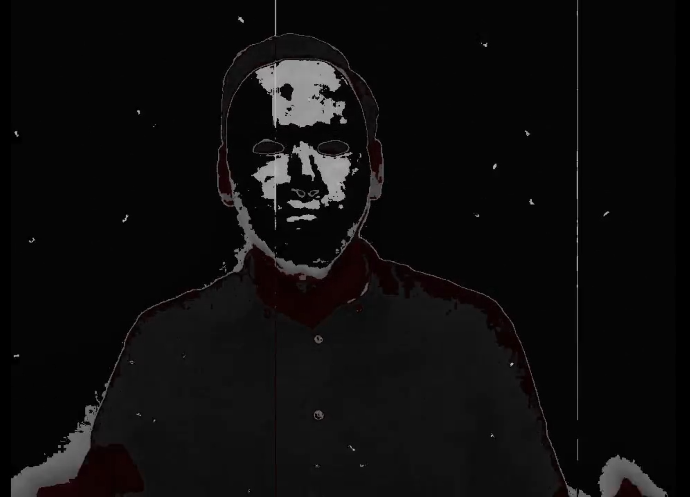

Bienvenido a mi Blog, mi nombre es Carlos Estévez, soy un
estudiante de 2do año de ingeniería informática y me gusta mucho
comprender de donde vienen todas las cosa que nos rodean. En
este post te comentaré acera de una de las ideas mas
interesantes que visto, Mis catedráticos de Administración de
Bases de datos y de Programación WEB junto a los instructores
simularon un ataque de un terrorista a los servidores de la base
de datos de la UCA, lo que seria nuestra nota de una practica de
laboratorio.
Todos los estudiantes nos asombramos por la gran idea que ellos
tuvieron y nos mostramos expectantes a lo que puediera ocurrir
en esa semana. Yo no sabia como reaccionar, lo unico que sabia
era que iba ser divertido "Salvar a la UCA" del ataque
terrorista.
Capítulo 1 - “Begin;”
El primer día se nos propuso la actividad, en la cual un malvado
villano llamado Ale Rav nos indica por medio de un video que fue proyecta
en nuestra clase que su objetivo era destruir la Universidad José Simeón Cañas
para asi poder erradicar el sistema de educación arcaico al que estamos acostumbrados.

Luego de eso, nos dimos cuenta que no estabamos solos, ya que contabamos con la ayuda
una persona infiltrada en las filas de Ale Rav, el de nombre de esta persona es Kurt ROT que nos
deja un código Qr que nos lleva al siguiente enlace.
Kurt nos dejo un audio para que pudieramos conocer su voz:
Capítulo 2 - “O-O-O”
Al resolver el trigger sobre la validación de dui en el servidor de phpPgAdmin,
se inserto una fila a la tabla kurt_out la cual contenia el siguiente enlace
en el que nos introducia a una nueva personaje llamada Ada Jarvis, la Introducción de Ada
nos lleva hacia una pista ubicada bajo las mesas de ajedrez del polideportivo.
Debo confesar que cuando llegamos con mis amigos a buscar el codigo Qr,
buscamos debajo de todas las mesas y no encontramos nada, luego nos reunimos a leer
el poema que mencionaba en la pista, pero vimos a los instructores de Administración
de Bases de Datos acercarse de manera sosechosa a las mesas, ellos iban a pegar el codigo
bajo la mesa el cual contenia el seguiente enlace
con la "bendecida" de Ada.